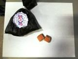
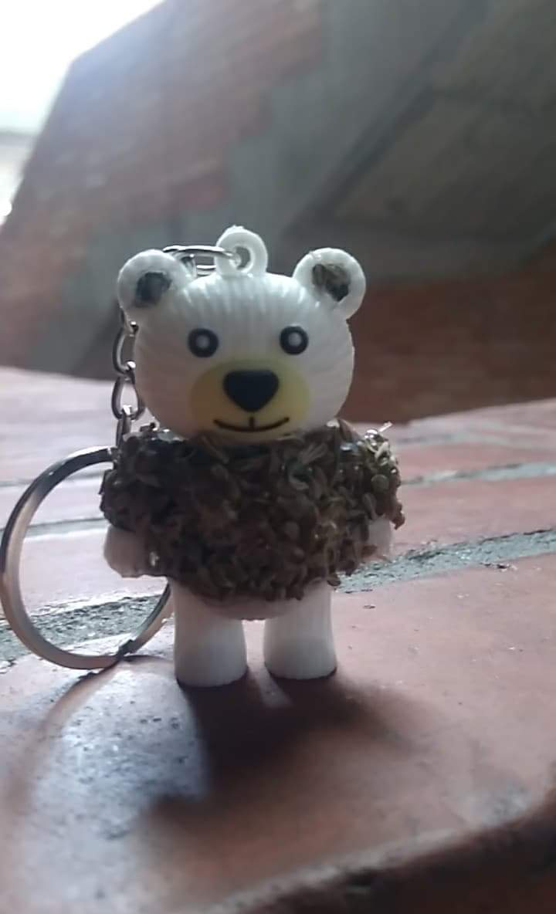

| PRODUCTOS |
| Nombre Producto |
Descripción |
precio |
Foto producto |
| DELICIOSOS PRODUCTOS |
| Café instantaneo. |
Sobre en presencion individual de 25 gramos elaborados
por la empresa "Deliciosos productos", ubicado en la institución
Rufino José Cuervo. |
600 |
|
| COFFE DAFFA |
|
Maiz con caramelo
a base de café. |
Bolsa de maiz con caramelo de café
de 50 gramos listo para consumir. |
600 |
|
| MELITO CARAMELITO |
| 1.Caramelo de café por unidad
2.Bolsa x 6 unidades. |
Deliciosos caramelos de cafe elaborados por la empresa
Melito Cramelito ubicado
en el Colegio Rufino Jose Cuervo IED curso |
Opción 1:100
Opción 2:1.000 |
 |
| NAKS COFFE |
| Postre Napoleon |
Textura con flan de capa y un delicioso sabor a café. |
Opción 1:2.000
Opción 2:4.000 |
|
| Postre Tiramisu |
Textura esponjosa con un delicioso sabor a café |
Opción 1:2.000
Opción 2:4.000 |
|
| Postre Sank |
Postre en donde lo que más destaca es
nuestra deliciosa especialidad, el café,
es una delicia para nuestro paladar. |
Opción 1:2.000
Opción 2:4.000 |
|
| PARADISE COFFE |
| Capuccino |
Deliciosa bebida a base de cafe acompañado de leche,
crema chantilli,cerezas,chicpitas de colores |
1.500 |
|
| Capuccino + galleta. |
Deliciosa bebida a base de cafe acompañado de leche,
crema chantilli,cerezas,chicpitas de colores que puede
ser acompañado con galletas para un mejor sabor. |
2.000 |
 |
| Galleta. |
Acompaña al capuccino como un complemento Delicioso,
se puede llevar a elección del cliente. |
500 |
|
| LAS DELICIAS DEL COFFE |
| Gelatina Natural a base de café. |
Gelatina sabor a café con trozos de Gelatina
de diferentes sabores. |
2.000 |
|
| Trufas |
Delicioso postre tipo trufa de cafe
para un dia ocasional. |
1.500 |
|
| GOOD COFFE |
| Café con helado |
Café batido con helado y crema chantilli con adición
de aderezos a solicitud del cliente para compartir
en familia. |
3.000 |
|
| PUBLICIDAD J&V |
| Folletos |
Conozca cada propuesta de las empresas de Café
en un solo lugar.. PUBLICIDAD J&V |
300 |
|
| Tarjetas |
Unas lindas tarjetas basadas en el café colombiano |
800 |
|
| Calendarios |
Calendarios con hermosos motivos de la tematica del café para cada mes. |
12.500 |
|
| Poster |
..... |
21.000 |
|
| COFFE TRAVEL |
| Plan A |
4 dias y 5 noches, ingrreso a parque, hospedaje,
alimentación y trasnporte. |
800.000 |
|
| Plan B |
8 días y 7 noches, ingreso a cuatro parques, una noche de bar,
hospedaje, alimentaión y tranporte. |
1'200.000 |
|
| COFFE PIXES |
| Llaveros de eneldo y robusta |
Llaveros elaborados con semillas de café. |
1.500 |
 |
| Manillas de robusta y eneldo |
Manillas elaboradas con semillas de café. |
1.000 |
|
| COFFE TREE |
| Café organico |
Café a base de productos naturales que puede ser acompañado
de otros productos. |
1.000 |
|
| Café vegetariano |
Grano de café vegetariano, saludable para el cuerpo y para tú corazón. |
1.200a |
|
| COFFE AROMA |
| Grano de café |
Delicios café en grano 100% colombiano |
1 Libra:6.500
1/2 Libra:4.500 |
|
| COFFE STRIKE |
| Grano de café |
Café molido y en grano con dulce aroma colombiano. |
1 Libra café molido:4.500
1 Libra café en grano:5.000 |
|
| TRANSPORTADORA IIIL |
| Coffe pump |
Flan de café con galletas oreo y crema chantilli. |
2.500 |
|
| DISTRIBUIDORA JEPAJ |
| Adesivos de nevera |
Imagenes de café para colocar en la nevera. |
2.000 |
|
| Mochila cafetera |
Mochila de café. |
2.000 |
|